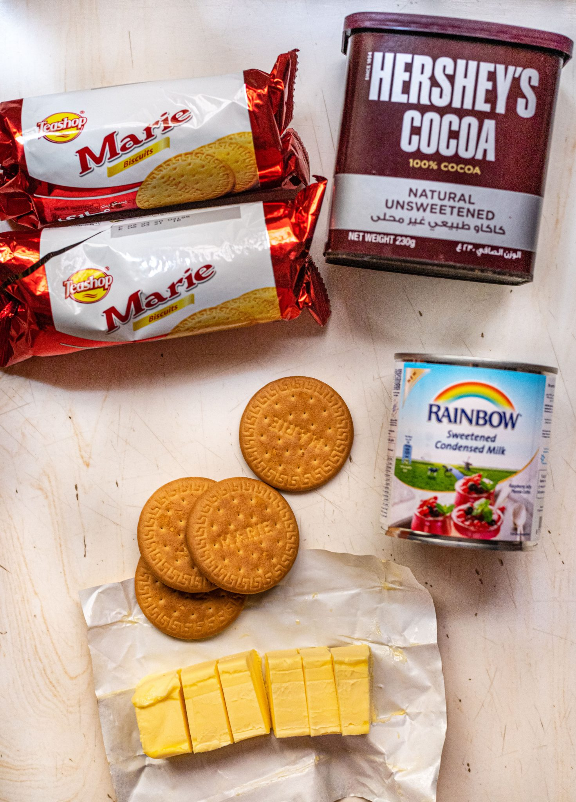
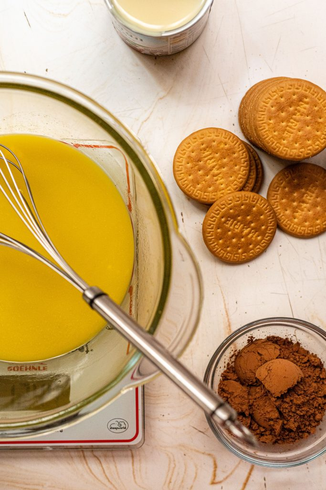
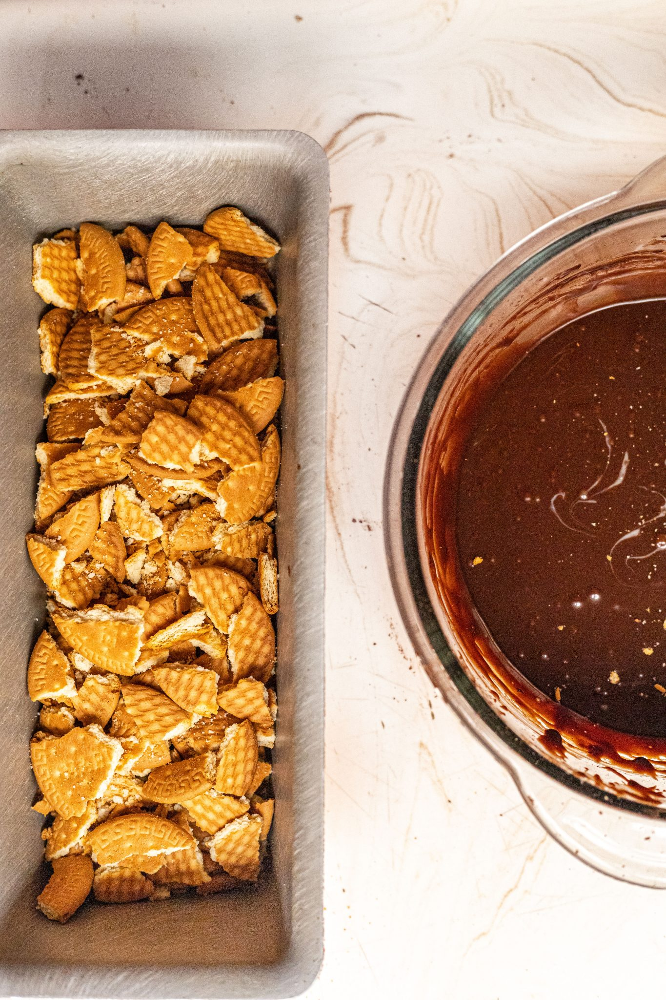
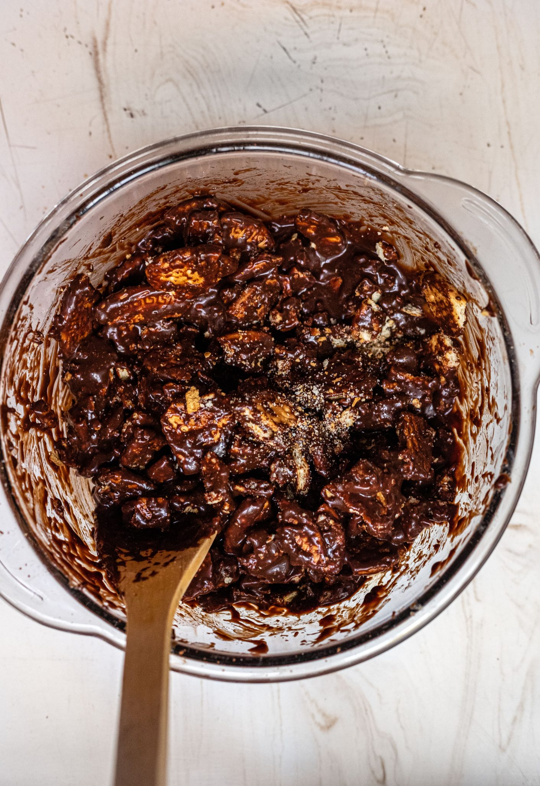
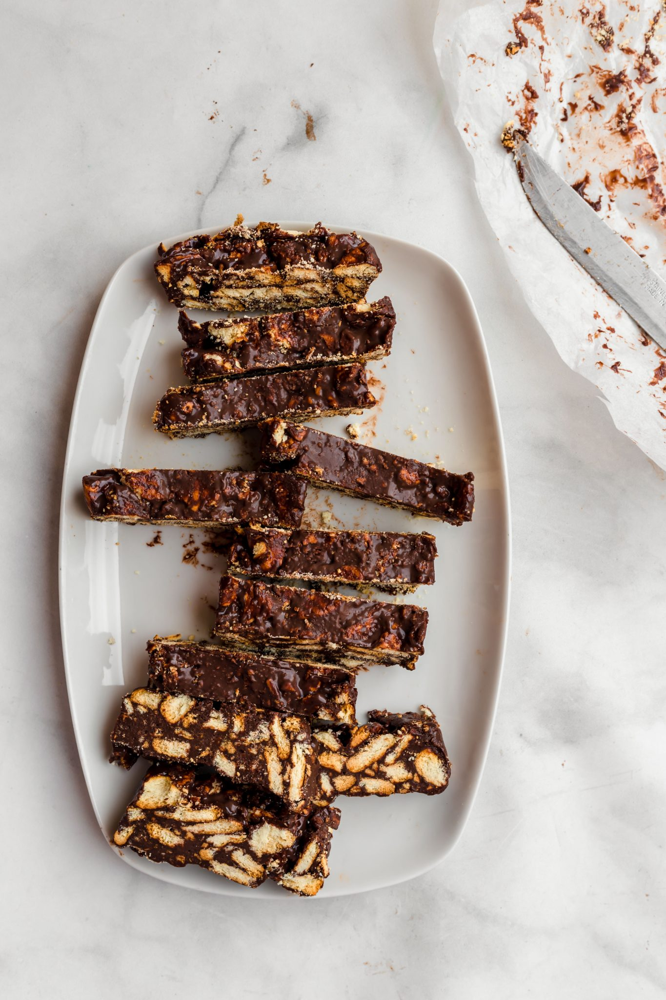

Lazy Cake Recipe
Lazy Cake is one of the easiest cakes to make, yet is very tasty. It only has 4 ingredients and takes very little time to make.
Ingredients:
- Unsalted Butter
- Cocoa Powder
- Sweetened Condensed Milk
- Biscuits

Directions:
- First, melt the unsalted butter

- Put the melted butter, cocoa powder, and condensed milk into a bowl and mix

- Crush the biscuits into fine chunks and add them into the mixture, if preferred, you can add walnuts with the biscuits.

- Put this mixture either in a loaf pan or rap it up in aluminum foil into a cylinder shape and then freeze it for about 4 hours.
- After 4 hours take it out and let it thaw for a few minutes, cut it into rectangular slices, and enjoy!

Source:
https://everylittlecrumb.com/lazy-cake/